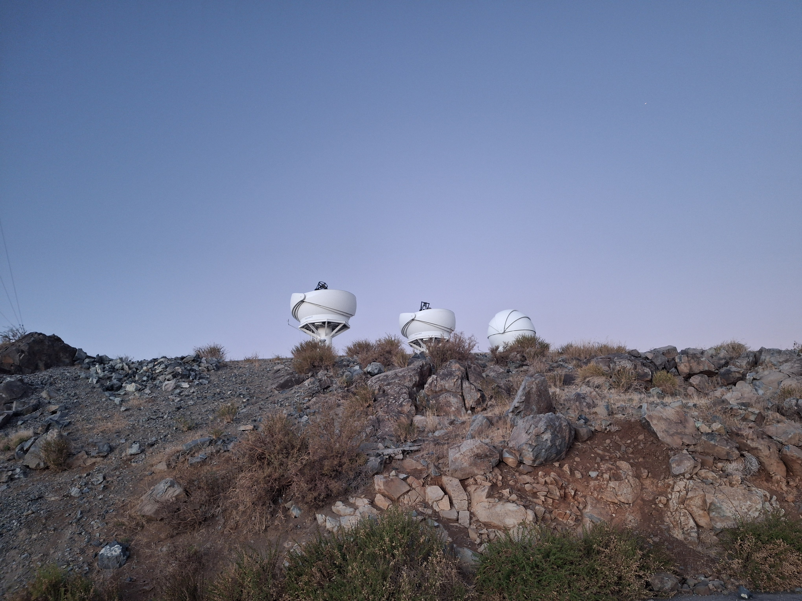

Rare stellar deaths & explosions
What do their multi-wavelength emission, shapes, and environments reveal about the most energetic events in our Universe?

Tidal disruption events
When a star wanders too close to a black hole, it gets torn apart in what is called a tidal disruption event (TDE). TDEs are fascinating astrophysical laboratories, as they allow us to measure properties (such as the mass) of otherwise hidden black holes in distant galaxies. They constitute a diverse and relatively new class of transients, with 100+ events discovered over the past decades. TDEs exhibit a range of interesting behaviours at various wavelengths: from repeated flashes in the X-ray and UV/optical regime, including X-ray quasi-periodic eruptions (QPEs), to light echoes in the infrared, and all the way to bright radio emission and energetic gamma-rays that reveal the presence of relativistic jets in some events. In order to utilise TDEs as tracers of black hole evolution, several questions related to the origin of their multi-wavelength emission still need to be answered.
In my work, I have used polarimetry to answer some of these questions. Polarimetry is an observational technique used to measure the polarisation of light; this allows us to probe the geometry of the light-emitting region in transients, and gives us insight into the physical processes that produce the polarised emission. During my PhD, I have developed a spectropolarimetry pipeline to reduce data from the FORS2 instrument on the Very Large Telescope (VLT) in Chile. By analysing the optical polarisation of a large sample of TDEs, we have found evidence that the optical emission (at least in some events) is produced by reprocessing of X-rays in an aspherical envelope of electrons. For more details, see my paper.
Superluminous supernovae
Superluminous supernovae (SLSNe) are powerful stellar explosions, brighter than any other type of supernova. It is still a mystery what powers them: possible luminosity sources include the spin-down of a magnetar, interaction with circumstellar material, radioactive decay of nickel, and fallback accretion onto a compact object. Estimates of their pre-explosion masses, as well as their host galaxy environments, suggest that they are the deaths of very massive stars. In particular, hydrogen-poor SLSNe show a strong preference for highly star-forming, metal-poor, low-mass host galaxies, consistent with a young population of massive progenitor stars.
In my most recent study, I looked at the very unusual host galaxy of such a SLSN. In contrast to the rest of the SLSN population, this event was found right in the middle of a massive early-type galaxy, which does not show clear signs of ongoing star formation. This is unexpected, as massive stars are short-lived, and should have exploded long ago. This puzzling finding raises several questions: can massive star formation be facilitated even in old galaxies? Or can SLSNe potentially arise from low-mass progenitors? This work is still in preparation, stay tuned!
Kilonovae
Gravitational waves are emitted when two neutron stars (or a neutron star and a black hole) merge together. The disrupted stellar material is rich in neutrons, which are captured in what is called the r-process: this process synthesises elements such as gold and platinum. The radioactive decay of the heavy elements that are formed produces light: a kilonova. As such, kilonovae pinpoint the birth place of the heaviest cosmic elements. In addition, the simultaneous detection of a gravitational wave event and its electromagnetic counterpart can provide strong constraints on the Hubble constant, which measures the expansion rate of the Universe.
I am interested in constraining the inclination, geometry, and composition of kilonovae with polarimetry. However, kilonovae are quite rare, and so far only one event has been discovered in tandem with a gravitational wave signal (AT 2017gfo, which turned out to be unpolarised). Hence, I rely on simulations of kilonovae to predict their polarisation. My goal is to explore the full parameter space of kilonova ejecta properties, and to link these properties to observables. As a preparatory step, I am working to reduce the numerical noise in radiative transfer simulations, so that they can be used later to make polarisation predictions for kilonovae.
Fast X-ray transients
Fast X-ray transients (FXTs) are X-ray flashes of extragalactic origin, lasting only up to a few hours. Their nature is not yet fully understood; possibly, they are related to core-collapse supernovae, mergers of compact objects, or tidal disruptions of stars by intermediate-mass black holes. The launch of the Einstein Probe (EP) satellite in 2024 rapidly progressed the field by enabling timely follow-up observations, and revealed that at least some of them are associated with luminous core-collapse SNe.
Before the launch of EP, many FXTs were found in archival X-ray data, and lacked multi-wavelength follow-up observations. During my Master's research, I studied a sample of FXTs that had been found in the archives of the Chandra X-ray Observatory, to answer the question: are FXTs the X-ray afterglows of short gamma-ray bursts that are seen off-axis? Short gamma-ray bursts are yet another class of transients, produced by the merger of two neutron stars (like kilonovae). In the aftermath of such a merger, a relativistic jet is launched that produces gamma-rays; when this jet interacts with the surrounding medium, it produces a multi-wavelength afterglow. When the jet is not pointed exactly towards Earth, we may miss the gamma-rays, but still observe the X-ray afterglow. I compared predictions of off-axis afterglows to the X-ray light curves of FXTs, and although an afterglow origin is not ruled out for certain events, I found that this scenario cannot explain the entire population of FXTs. More information can be found here.